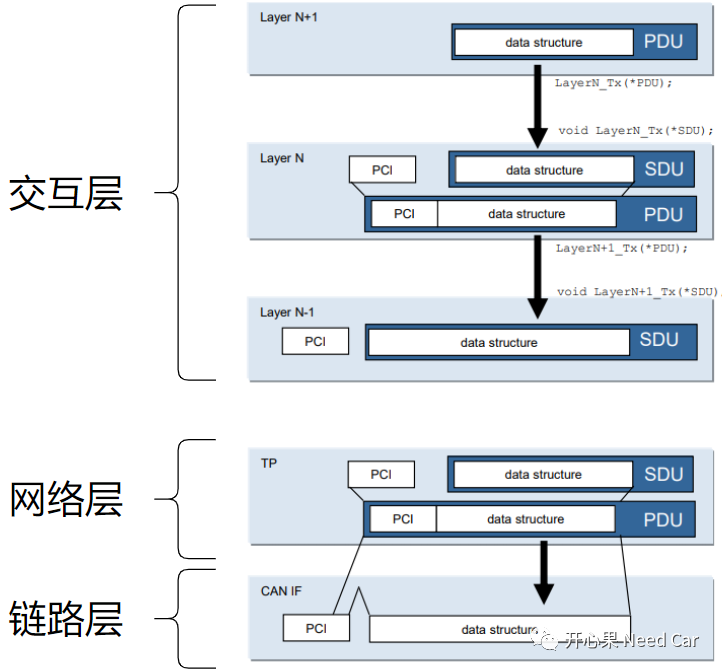
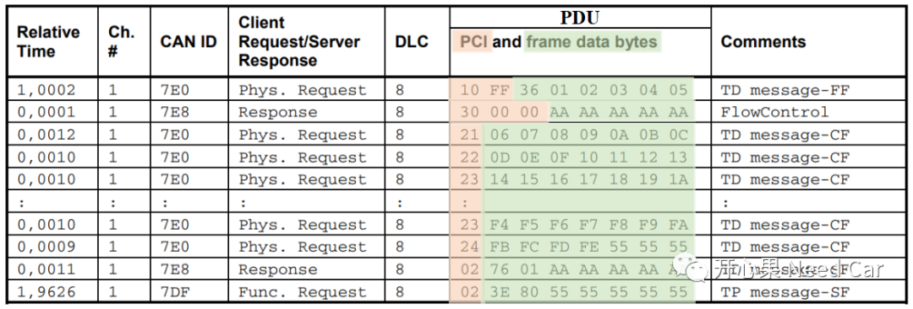
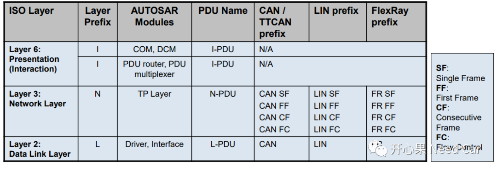
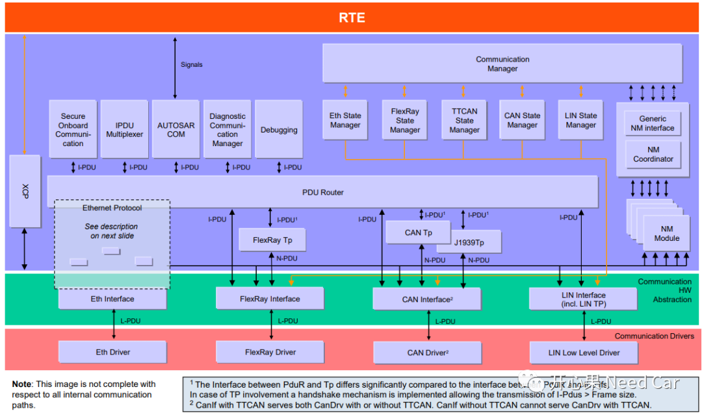

开心果 Need Car · 2022-04-11T18:33:00+08:00 · 微信原文
学习协议规范实际在学啥？我的理解：学“规矩”。“规矩”就是规范里的细枝末节，不能囫囵吞枣。当然，我是一个Autosar学徒，很多细节掌握的不到火候，需要读者不断的指正，大家一起进步。本文，和大家聊一下Autosar通信栈中，各层级对应的PDU表达方式。
Autosar的分层架构没有完全按照OSI的七层模型定义，可以将Autosar的模型大致分为：数据链路层、网络层、交互层，如下所示：

由上图，我们可以看出：每个层级都会包含PCI和data Structure，PDU = PCI + data Structure，SDU = data Structure。
PCI、SDU、PDU又都是啥呢？咱们看一下官方解释：
| Abbreviations | Description |
| SDU | Service Data Unit. It is the data passed by an upper layer, with the request to transmit the data. It is as well the data which is extracted after reception by the lower layer and passed to the upper layer. A SDU is part of a PDU. |
| PCI | Protocol Control Information. This Information is needed to pass a SDU from one instance of a specific protocol layer to another instance. E.g. it contains source and target information. The PCI is added by a protocol layer on the transmission side and is removed again on the receiving side. |
| PDU | Protocol Data Unit. The PDU contains SDU and PCI. On the transmission side the PDU is passed from the upper layer to the lower layer, which interprets this PDU as its SDU |
对应到实际的开发，PCI可以理解为头部信息，比如：CanTp，在发送数据的时候，会添加SF、CF、FF、FC信息等；data Structure就是要发送的信息，用一个结构体表示，结构体里会有数据存储起始位置（指针），数据长度。
data Structure（即：PduInfoType）的具体声明形式示例，如下所示：
typedef uint8 PduLengthType;typedef uint8* SduDataPtrType;typedef struct{SduDataPtrType SduDataPtr;PduLengthType SduLength;} PduInfoType;
示例如下所示：

L-PDU、N-PDU、I-PDU三者的关系如下所示：

L-PDU：对应链路层的PDU，一般来说，我们称接口层(Interface，XX_If)为链路层，比如：CanIf、FlexrayIf等。更确切地说是Driver和Interface构成链路层。我个人觉得Driver作为链路层更合适，Interface毕竟是抽象模块，与硬件不是强绑定的关系，比如：以太网中，MAC层为链路层，与芯片平台强相关。
N-PDU：网络层对应的PDU，一般来说，我们称传输层(Transport，XX_Tp）为网络层，比如：CanTp、FlexrayTp等。
I-PDU：交互层（表示层）对应的PDU。交互层都有哪些模块？如下图所示：

XX_If以上模块的信息交互依赖I-PDU，注意：XX_If与XX_Tp模块的交互依赖N-PDU。
一般来说，小数据传输时，用XX_If；大数据传输时，用XX_Tp。所以，在诊断的多帧传输时，XX_Tp层会将多个N-PDU缓存，直到一个完整的I-PDU接收完，之后通过PduR送给DCM，即：I-PDU = n * N-PDU（n是大于1的正整数）。
参考资料
ISO 14229-1_2013(E).pdf
AUTOSAR_EXP_LayeredSoftwareArchitecture.pdf
往期精彩回顾